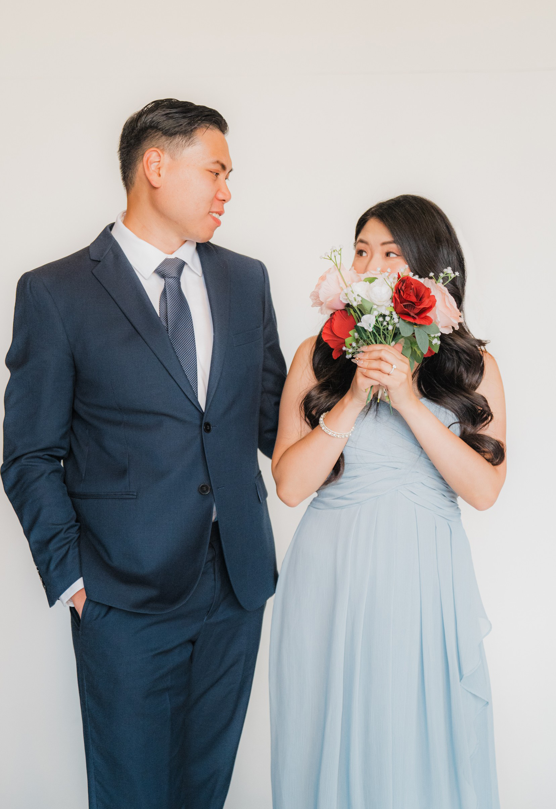

19.09.2026
Pemberkatan Pernikahan
Michael & Jessica

“Lakukanlah segala pekerjaanmu dalam kasih”
1 Korintus 16:14
19.09.2026
Pemberkatan Pernikahan
“Lakukanlah segala pekerjaanmu dalam kasih”
1 Korintus 16:14


Pada tahun 2018, Aku pindah ke Kanada dengan tujuan yang jelas: melanjutkan pendidikan, membangun masa depan yang lebih baik, dan pada akhirnya menjadi Penduduk Tetap. Saat itu, hubungan asmara tidak pernah menjadi bagian dari rencana ku. Hati ku tertuju pada proses beradaptasi di negara baru dan mengejar impian yang Tuhan telah taruh dalam hidup ku.
Kemudian, pandemi COVID-19 datang. Ketika dunia terasa semakin terisolasi, Tuhan diam-diam sedang mempersiapkan sebuah kisah yang tidak pernah aku bayangkan.
Melalui teman serumah, Monica, aku diperkenalkan kepada Jessica. Apa yang awalnya hanya percakapan sederhana berkembang menjadi persahabatan yang bermakna, dibangun atas nilai-nilai, iman, dan saling pengertian. Tanpa kami sadari, persahabatan itu perlahan tumbuh menjadi sesuatu yang lebih dalam.
Setelah banyak berdoa dan mencari kehendak Tuhan, Aku mengambil langkah iman dan mengajak Jessica memulai sebuah hubungan. Dengan percaya pada waktu Tuhan yang sempurna, kisah cinta kami pun resmi dimulai, yang membawa kami pada perjalanan indah hingga hari pernikahan ini.
Semuanya bermula dari sebuah doa. Aku percaya bahwa dalam waktu Tuhan yang sempurna, Tuhan akan mempertemukan dengan orang yang tepat. Bahkan, dengan penuh keyakinan, aku pernah berkata kepada sepupu-ku bahwa aku akan membawa pacar ke pernikahan berikutnya, meskipun saat itu aku masih lajang.
Melalui keadaan yang tak terduga, Tuhan dengan lembut menuntun ku kepada Michael. Apa yang awalnya hanya sebuah persahabatan dengan seseorang yang berada dalam tahap kehidupan serupa, perlahan tumbuh menjadi sesuatu yang lebih dalam. Mereka berbagi cerita, tawa, dan kedekatan yang tidak pernah kita sangka.
Aku tidak pernah membayangkan memulai hubungan setelah mengenal seseorang hanya enam bulan. Namun, bersama Michael, semuanya terasa alami, damai, dan tepat. Melihat kembali perjalanan mereka, Aku menyadari bahwa Tuhan telah menjawab doa ku. Apa yang dimulai dengan iman menjadi persahabatan, kemudian bertumbuh menjadi kasih, dan hari ini mereka dengan sukacita memulai babak baru bersama, sambil terus mempercayakan langkah kami pada penyertaan dan berkat Tuhan.

5 tahun bersama telah menjadi perjalanan indah yang dipenuhi kasih, pertumbuhan, dan pembelajaran. Melalui berbagai kebahagiaan, tantangan, kesalahpahaman, dan perbedaan pendapat, kami belajar pentingnya kesabaran, pengampunan, komunikasi, serta memahami kapan harus berbicara dan kapan cukup mendengarkan. Dengan tuntunan Tuhan, kami belajar melepaskan harapan yang tidak realistis dan berfokus untuk memberikan yang terbaik satu sama lain.
Perjalanan ini membentuk pemahaman kami tentang arti cinta sejati—bukan tentang kesempurnaan, melainkan tentang pilihan setiap hari untuk saling percaya, menghormati, menghargai, dan mendukung. Kami belajar menerima perbedaan sebagai berkat, karena perbedaan tersebut justru membuat kami saling melengkapi dan menguatkan. Dalam setiap musim kehidupan, kami terus memilih satu sama lain, bertumbuh bersama, dan menyerahkan perjalanan cinta kami kepada Tuhan.
- Michael & Jessica -
Mempelai Pria
Michael Wijaya
Mempelai Wanita
Jessica Ekasalim
Orang Tua Mempelai Pria
Andrianto Wijaya* & Hanna Susani Karnadi†
Orang Tua Mempelai Wanita
Sehan Ekasalim & Flora Susanto
*Diwakili oleh Wahyu Hidajati - Tante dari Mempelai Pria
† Walaupun tidak hadir bersama kami secara fisik, engkau selalu berada di dalam hati dan pikiran kami saat kami memulai perjalanan baru ini hari ini.
Saudara Mempelai Pria
Jessica Wijaya
Saudara Mempelai Wanita
Joshua Ekasalim
Pengiring Pria
Adrian Hartanto & Randy Yuwono (BM)
Pengiring Wanita
Genice Chandra & Angela Susilo (MoH)
Pastor
Ps Ferdy Chayadi
Untuk memastikan pasangan pengantin dapat berfoto bersama semua tamu, sesi foto bersama akan dilakukan dengan urutan sebagai berikut:
Selamat menikmati cocktail hour kami! Silakan masuk ke dalam untuk menukarkan voucher minuman Anda Setelah selesai, silakan bersantai, berbincang, dan berfoto di photobooth kami.
Untuk mendapatkan voucher minuman, silakan rekam pesan video untuk kedua mempelai.
Karena jumlahnya terbatas, setiap orang hanya dapat memperoleh 1 voucher minuman. Untuk mendapatkan voucher minuman, silakan rekam pesan video untuk kedua mempelai.
Pertama-tama, kami mengucap syukur dan memuliakan Tuhan Yang Maha Kuasa, yang telah melindungi, membimbing, dan memberkati kami sepanjang hidup. Kami percaya bahwa tanpa kasih dan campur tangan-Nya, kami tidak akan berada di Kanada maupun dipertemukan satu sama lain. Kami sangat bersyukur atas kasih karunia-Nya dan kesempatan untuk mengenal-Nya secara pribadi. Dalam setiap tantangan, Tuhan selalu menjadi penasihat, sumber kekuatan, dan penghiburan kami. Doa terdalam kami adalah agar Tuhan senantiasa menjadi pusat hubungan dan keluarga kami, sekarang dan selamanya.
Kepada keluarga dan sahabat-sahabat terkasih, terima kasih telah berjalan bersama kami dalam setiap musim kehidupan. Kasih, doa, tawa, dukungan, dan persahabatan kalian telah membentuk kami menjadi pribadi seperti sekarang. Terima kasih telah hadir, mendoakan, mendukung, dan berbagi sukacita bersama kami di hari istimewa ini. Kiranya Tuhan memberkati kalian dengan berlimpah, sebagaimana kalian telah menjadi berkat yang begitu indah dalam hidup kami.

Event Co-ordinators
Genice Chandra, Angela Susilo & Stefany Jaya
Master of Ceremonies
Adelia Yolanda & Robert Matusik
Musicians
Stefany Jaya & Hansen H. Budidjaja
Dancers
Nadine G.D. Tarigan & Jacqueline Siswanto
Event Greeters
Elizabeth S. Melinda, Calista Tanaka, Nadia Tan & Camillia Tan
Catering Assistants
Lidya Susanto & Hera Susanto
Audio/Visual Technicians
Fernando Ng & Otto Priadi
Led by Felicia H
(Verse 1)
I love You, Lord
Oh, Your mercy never failed me
All my days, I've been held in Your hands
From the moment that I wake up
Until I lay my head
Oh, I will sing of the goodness of God
(Verse 2)
I love Your voice
You have led me through the fire
And in darkest night You are close like no other
I've known You as a Father
I've known You as a Friend
And I have lived in the goodness of God, yeah
(Chorus)
And all my life You have been faithful
And all my life You have been so, so good
With every breath that I am able
Oh, I will sing of the goodness of God
(Bridge)
'Cause Your goodness is running after,
it's running after me
Your goodness is running after,
it's running after me
With my life laid down, I'm surrendered now
I give You everything
'Cause Your goodness is running after,
it's running after me
(Chorus)